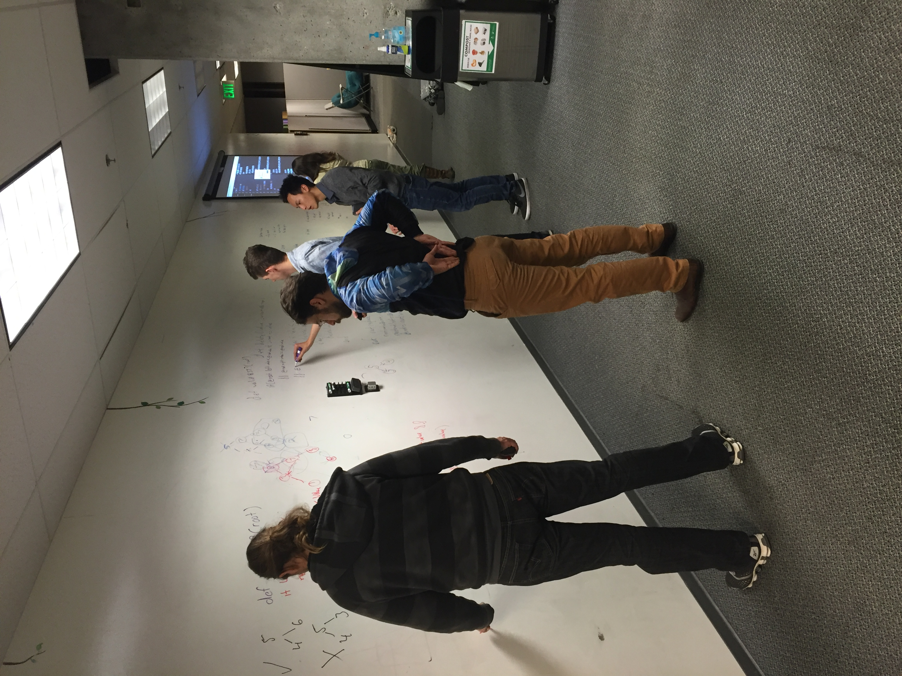
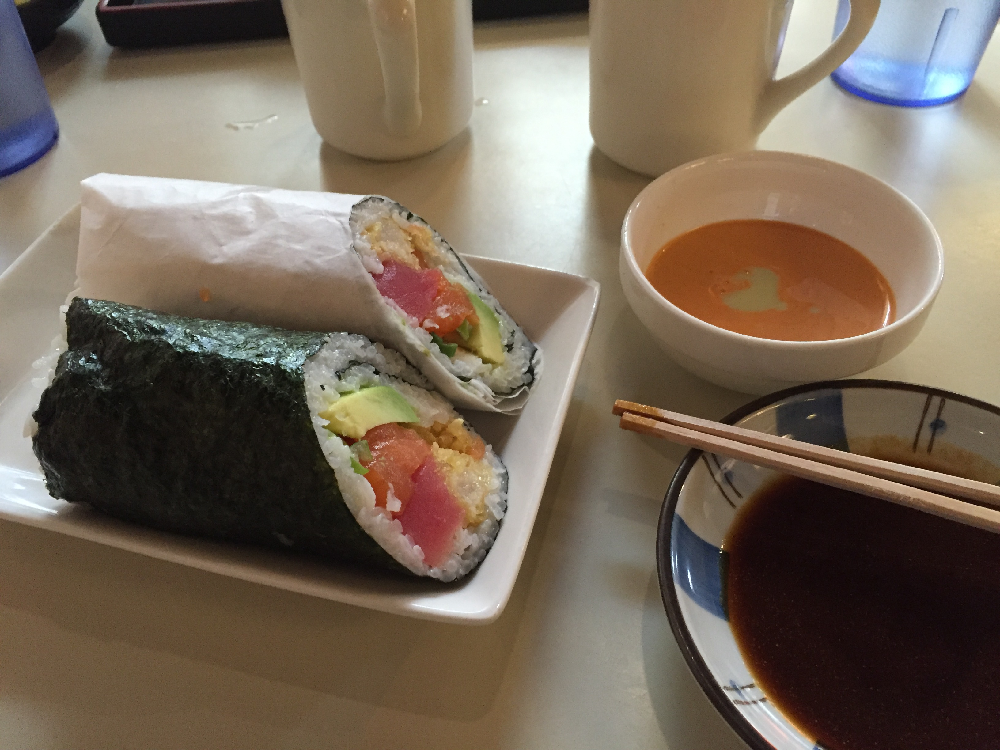
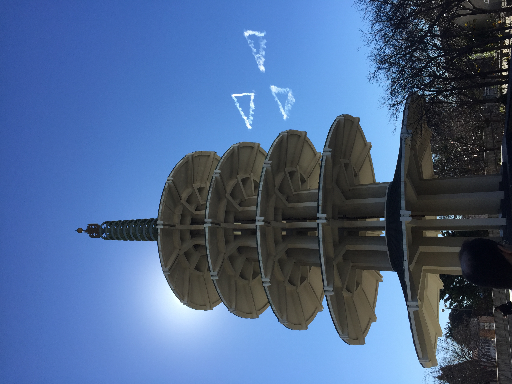
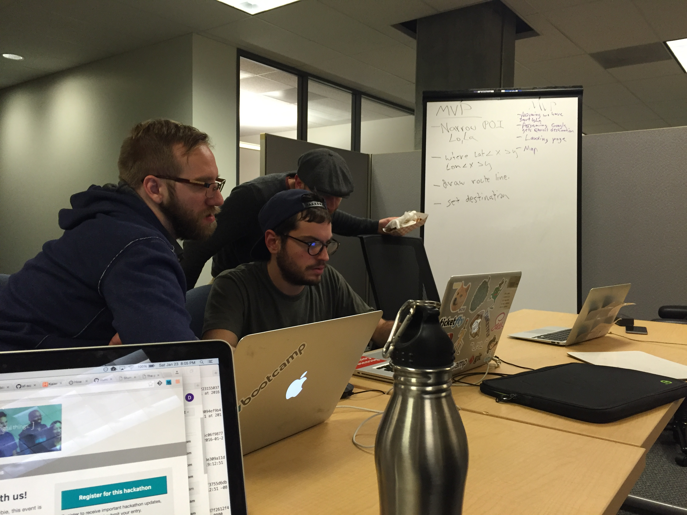
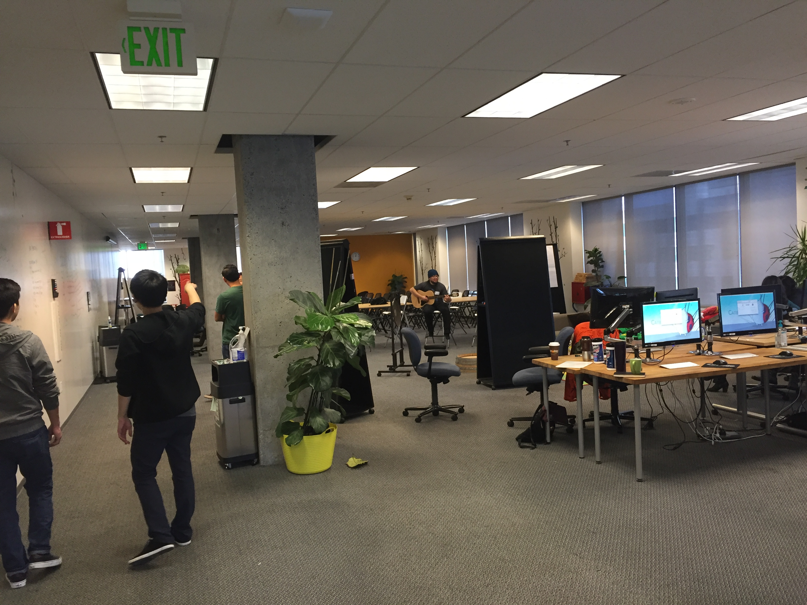
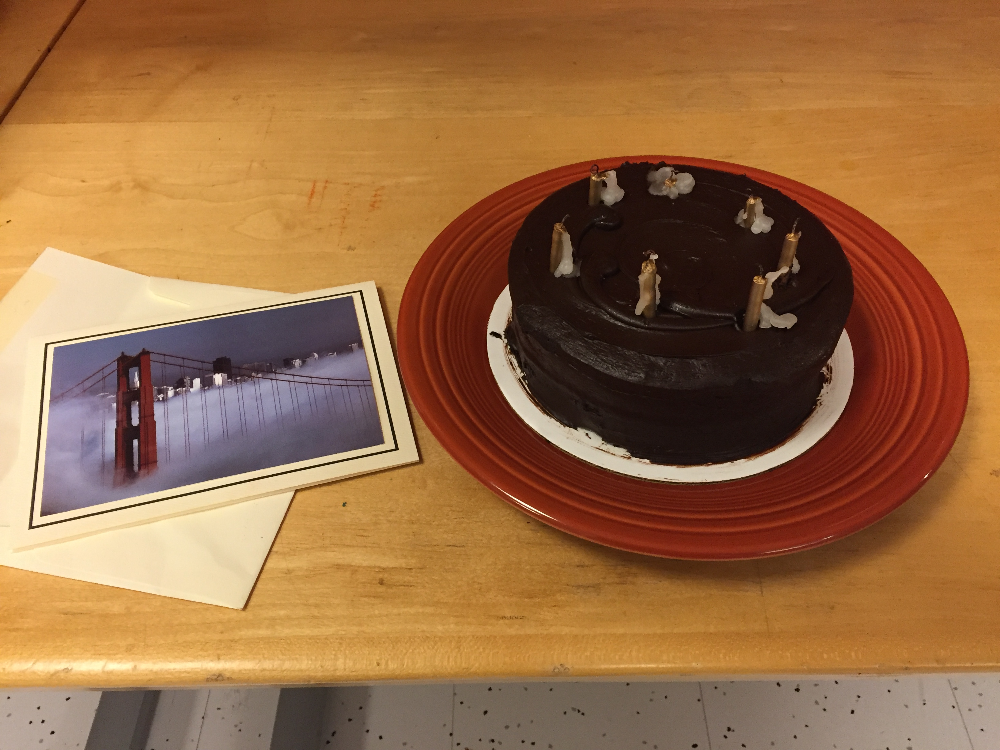
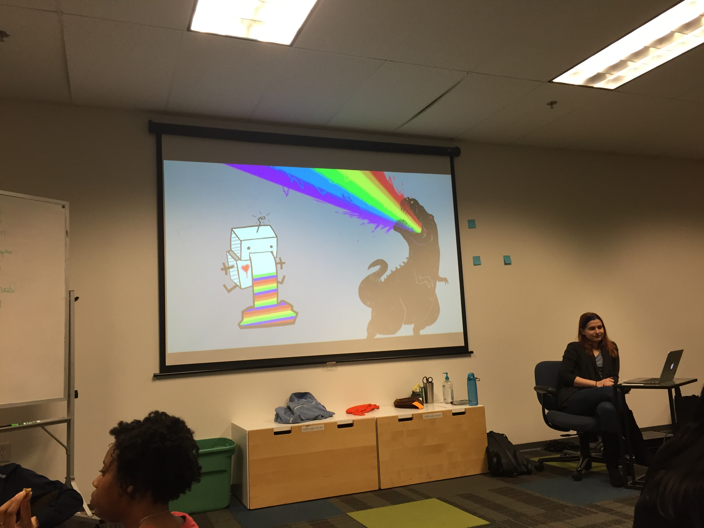

Tuesday, March 8, 2016
Final Push
I haven't posted in an entire month, so sorry if anyone thought my site was broken or I was kidnapped by dogs dressed as people or something. Things really ramped up right after that last post, and this has been safe to say the most insane month of work and learning ever for me.
But how are you?
In a week and a half I'm advancing to the career-training portion of the program, so I'm essentially wrapping up the 'bootcamp' mode of this thing pretty soon! Final projects start Thursday, and that's absolutely all any of us will be doing until the following Friday when we present them. Good times!
I'm keeping it brief because there's a load more to do tonight, but thought I ought to at least broadcast I'm alive. Pretty soon I'll be a regular family member and friend again, I promise! Can't wait to catch up with everyone and find out what I missed.
Sunday, Feb 7, 2016
We Survived the Superb Owl
So there was this really famous thing in San Francisco-ish today: the Superb Owl -- you may have heard about it. Actually wasn't too difficult to avoid, even though the transportation dept tried to make everyone freak out. This had the welcome effect of driving SanFranciscoans out to the Sierras for the weekend or just causing them to avoid the trains altogether. I enjoyed empty trains all week, but now that footballs came and went it's back to regular I spose.
Update! I'm still in school. Didn't have to repeat either, so that's good. Had a really insightful code review session and learned a lot from the assessment process, but I'll be continuing on to Phase 2 tomorrow. It'll be with a lighter cohort - only 11 out of the 18 of us are advancing this time around. Kind of freaks me out because everyone I've talked to, even before starting the program, says Phase 2 is the killer and it's very common to repeat. With that in mind I'll keep this one brief because I still have lots of reading for tonight.
I'll start with this shot of some wall-whiteboarding:
This is kind of an after-hours club that practices drilling algorithms. Everyone totally just uses dry-erase markers all over the walls, so it looks like the whole school is going John Nash crazy, like in 'A Beautiful Mind'. Pretty cool. The purpose - or at least the immediate and practical purpose - is to get better at technical interview skills for job hunting. Obviously these are skills we'll want to build for our career anyway, but that's how they get people to come. That and free pizza.
Kate came to visit this weekend so we checked out some San Fran. Decided on Japantown today, so naturally we ate some crazy hyper-Americanized Japanese food. This is a 'sushi-rito' and it's all the rage out here.
In case you couldn't tell, it's a sushi roll that's the size of a burrito. Tasty. The restaurant was in this cool park called Japantown Peace Plaza. Here's what we walked out to after lunch:
At first pass we didn't wanna be just another couple of tourists taking a picture of this cool pagoda with our phones, but this phenomenon was the perfect excuse. The mysterious triangles were featured in various online rumor mills. People were speculating it was a gay pride thing (actually that's what I thought), or pointing at something significant in the city, etc. The most elaborate explanation was that it was a prank, referencing the Research Triangle in North Carolina (whose team was defeated in the Superb Owl today) to remind San Francisco who the real Silicon Valley is. Gasp!
Turns out it was a Doritos ad. That's all 'till next time. Thanks for reading!
Sunday Jan 31, 2016
Getting ready for week 3
This blog apparently just warped two weeks into the future. I'm reading the date I just wrote, but to me these past two weeks have seemed like one big long brain-melting day. What a crazy place -- I'm learning tons. Every once and a while I'll look over code I wrote and posted to our submission site a few days previous and think "did I actually write that?" But in a bad way, like I'm already super critical of the primitive way I was looking at a concept. This place is about cramming it into your skull, and it's fantastic.
My cohort is great - these are the students that started with me two weeks ago (phase 1) - as opposed to other current students, like phase 2 who started 3 weeks previous to us. The students move through the program in 3-week segments, and there are 3 of these phases plus one 'career week' to cap it off. Everyone is encouraged to roam and mingle with other cohorts, which is great because it gives us a sense of perspective on how the program progresses, and gives senior(ish) students a chance to advise and mentor newer students (which they do often, with genuine interest in our progress).
The single most eye-opening and educational experience so far has been the hackathon I attended last weekend. This is a common thing in San Francisco, but this particular one was hosted by Dev Bootcamp onsite, and students, even new students, were encouraged to participate. You register, show up at 8am, drink lots of coffee, listen to people pitch ideas they've prepared for applications, form groups based on interest, then GO MAKE THING. It was pretty incredible. It's called a hackathon because it lasts all day, and into the night. Our team had an initial planning session (whiteboarding session) then we divided up tasks and just coded all day, periodically sharing files and merging them online, or regrouping and tweaking the project design. By the end of the day we had a working piece of software that would run online that took bits of raw data from a San Francisco government site, ran it through Google data for mapping, and returned an interactive map based on user input. I was trying to find a simpler way to put this, but honestly that's the best I could do because whoa! did it seem more complicated than necessary.
Mostly it was great just to get a feel for how teams work these things out. Everyone in my team was either a professional or a recent grad of Dev Bootcamp (I guess that's pretty much the same) but they made me feel so welcome and really took the time to loop me in on stuff that was over my head. So glad I went, even if it meant falling a little behind on work, and maybe a lot behind on sleep.
Here's an action-packed shot of my team MAKING THING
You can't even tell they're saving the world...
Here's one more shot of the space to give you an idea.
Kind of open-officey, but also plants and a wall that's one big whiteboard and yep that's a guy playing guitar. So exactly the cliche San Fran tech startup overcaffeinated realm of postive thinking you'd expect. Also, there's definitely a guy who exclusively gets around the space on an Airwheel, which is pretty much a prototype for those hoverboards.
One of the girls in my cohort found out it was my birthday Thursday, so she got a card and had everyone secretly sign it while I was up for a snack or whatever. Then at the end of the day they brought out a cake and everyone sang. Had no idea that was coming - made me feel like spending my whole day coding with these people wasn't a weird choice at all
So this week we've got 'assessments' on Wednesday. If you don't do well enough you have to start over. Like start over SCHOOL, not the test. It's built in to the rolling 3-week cohort model. If anyone is dragging they stay back and join the next incoming cohort. It's a way to keep teaching to the top of the class and not worry about anyone who's not getting it. Sounds brutal but it's kind of the only way to sustain this velocity of incoming material. Apparently it happens all the time too, my cohort is only 18 people, and one of those is a roll-back from a former phase 1 cohort. So yep I'm working extra hard this week. On that note I think I'll get back to work.
This post was long-ish just because I hadn't posted in a while, and lots of stuff has happened in the past two weeks. I'll try to post more often and focus on brief updates. Miss everyone - and thanks for reading. I'll leave you with a snapshot of my favorite visual aid from Thursday's morning lecture on "Sharing functional behavior with modules". Can you spot the behavior common to these two?
Monday Jan 18, 2016
Dave's off tickety-typing in San Francisco
Last day of Phase 0
Hey everyone! Tomorrow morning I start the onsite portion of my school, Dev Bootcamp. I'm all moved in to my new home-for-ten-weeks in San Francisco and ready to start. I'll try to post on this page here and there as I have time, with the idea of keeping any curious readers up to date with my unconventional learning adventure.
This page is part of my current website, and you can see pages I created during the online portion of school, including "technical blog" posts. This blog, though, is for family and friends, and isn't linked to from anywhere in the site. I'll keep all the posts on this page, with the newest at the top so there's only one web address to keep track of.
Now that the boring stuff is out of the way, here's the view from my room:

It's been foggy and rainy, and it'll probably stay that way, but when it's clear enough I can see the ocean out my window. To give you an idea of where I'm staying in the city - and where my school is - here's a screenshot of a map of my commute:

I'm staying on the west side in the Sunset district. The joke around here is that it's so foggy you never actually see a good sunset. That route is mostly the L train, where I get on one block from my spot and it dumps me 3 blocks from the school. I'm in a really cool neighborhood - doesn't even feel like I'm in the middle of a city. There are several parks within walking distance, here's one Kate and I walked down to today:


Not bad! So I'm staying with a couple who are friends of friends and airbnb their rooms out frequently. They're very welcoming and Kate is encouraged to bring Raja when she visits, so I found a good spot. Raja has made friends this weekend with the dogs who live here, Moxie and Gypsy:

Gypsy is the black mutt, Moxie is the sheepdog.
Kate helped me get all set up for the week, including making sure I had a meal plan and groceries, so I'm good to go. I'm really excited to start all the coding madness, and I'll post again about the site with pics once I'm settled into the program. Thanks for reading!